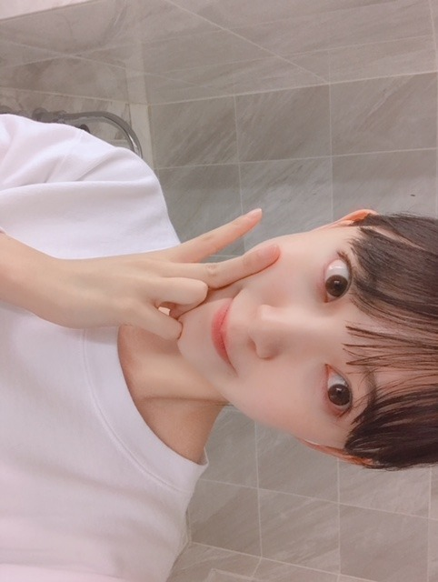

2018/0712Thu近づいてみた
にこ〜( ˆoˆ )


ちらっ^_^
ar発売日です！
アイメイクがかわいいです。
みてねー！

薄メイク。

セブンイレブンさんの台湾ver CMに出させていただいています！
ヒーロー風なCMに注目です！

ついでにロングの時の写真も 。
ロング派ショート派
ありがたい事に髪型についての意見を
日々たくさんいただきます
これからは1つにこだわらず
お仕事で切ったり伸ばしたり染めたり
色々変化もしていくと思います
でも、どんな私もいつも変わらずに
応援してくださる皆さんが大好きです
いつしか日奈子に
未央奈はカメレオンみたいに
いろんな色に染まれるって言われた時、
こんな無色のままでいいのかなって自信を
失いかけてたから少し嬉しかったのを思い出しました
もっと幅広く色んな経験をして
あらゆる色に染まりたいなぁって思います
どんな私も
私であることに変わりはない。
桜の木も花が咲いたと思ったら
緑の葉だけになったり、
冬には花も葉も無いから見た目は乏しく淋しく見えるかもしれないけど樹木自体はしっかりとぶれずにそこにあって...花が咲く春に備えていて。
見え方はその都度違えど桜の木は常に
存在して四季を通していろんな形で人々を魅了していますよね
すごいなぁ
私も芯のあるブレない人になりたいです
o(･x･)/
頑張ろう
前進 積み重ね あるのみ。だね。
そういえば、
とうもろこしと桃が大好きなんですけど
とうもろこしと桃が美味しいところってどこなんだろう？
山梨？新潟？うーん
知りたい...
では。
2018/07/12 12:42


コメント(592)
俺の地元の長野県だからぜひ観光出来てくれたら嬉しいな！！
どんな髪型の未央奈も好きやで〜
トキトキメキメキ
どの未央奈さんも、カワイイけどね
ブログ更新ありがとうございます。
Be water,my friend!
ブルース・リーさんが、言うてました。
水に常形なし。
つまり、変幻自在。
清流の如く流れもすれば、巨石を穿つこともある。
いろんな未央奈さんが、見たいよ
とうもろこしといえば、トトロのメイちゃん？
似合ってます
変わっていっても、応援していければと思います。
頑張ってください。
あ～未央奈の笑顔、大好きだ～
もう、幸せすぎるよー！
arの未央奈は、自然な感じで凄く生き生きとしていて、
未央奈そのまんまが誌面から飛び出してきそうな気がするくらい、
めちゃくちゃよかった！！
未央奈が無色だなんて思ったことは一度もないよ。
俺には、未央奈が未央奈色に見えるんだ。
その色は誰の色でもない未央奈だけの色。
その色は、髪の長さを変えても、
どこにいても何をしてもぶれない色、未央奈～を感じられる色なんだ。
だからこそ、未央奈が思うこと、考えることをやって見せてくれるいろんな色を純粋に楽しめるし、いつもと変わらず応援するよ！
未央奈は自分を信じてこれからも１つ１つをがんばってね！！
未央奈はホントに可愛いよ‼
レコメンも良かったよ‼
これからも身体に気を付けて頑張ってください
応援してます‼
ありがとう！！
他にもみかん ぶどう 柿も！！！
りょーへー(R.N.イナダウアーびーむ)だよ♪
ブログの始まりから、可愛い未央奈ちゃんがたくさん！arをチェックするのが楽しみ！薄メイクもよきよき！
あー、台湾verのセブンCM観た！日本のCMとは違った雰囲気だったし、面白かったよ！未央奈ちゃん、可愛かったしねー！
お仕事によって髪の長さや髪型が変化する、なんかカッコいい！笑 オファーによってすぐ対応するってことでしょ！見た目は変わったとしても、中身は変わらないわけだし、そこが好きなんだもん！きいちゃん、未央奈ちゃんのことをカメレオンに例えるなんて、いいこと言うなぁ！そうだね、がんばろう、がむしゃらに突き進むのみだね！
とうもろこしと桃が美味しいところ、か…！何も分かんないけど、長野とか？思いつきだけど！笑 とうもろこしに無心でかじりつく未央奈ちゃん、想像つくなぁ！きっと可愛いと思う！
#毎日コメント
#今日もお疲れ様
#レコメン！
#せりふ祭りだったね
#終始きゅんきゅんだよ
#○○いく？○○する？
#って言われたら
#いくー！するー！
#って叫んじゃうよ、そりゃ笑
#レコメン！ラジオCM
#しりとりver
#食べ物ばかりだね
#面白い
#ジングルも夏仕様だ
#サマーのホリディ
#私は堀でいっ
#これめちゃくちゃ好き
#1つ1つ向き合ってクリアしていく
#簡単なことじゃないけど
#大切なことだよね
#一緒に
#濃い人間になろうー
#明日も楽しみおな♡
#おやすみおな(/_;)/~~
努力
努力することを楽しめるのは幸せです。
たくさんの写真どれも可愛い(^^)
とうもろこしがおいしい所は分からないけど、桃なら地元の福島県がオススメだよ
とうもろこしは北海道
桃は山梨が名産地だよね
全然産地と関係ないけど旬八っていう八百屋ブランド、とうもろこしも桃も(もちろん他の果物も)すっごくおいしいよー
きゃーみおなー！もっと近づいて〜！！(>_<)
ね！(*´-`)
もともと未央奈の目の感じ私の好みにどストライクなのに、さらにアイメイク特集なんて私得過ぎます！！！
プラチナムフラッシュと一緒に絶対買います！(*´꒳`*)
薄メイクもやっぱり綺麗！とんでもない透明感です♬
巻きツインの写真は良い意味で人形みたいなと言うのかな？ファンタジーと言うか何というか、とにかくすごく可愛いですぅ〜♬
笑w ごめんごめんw 私もたまにロング派ってたまに言っていた1人です。でも本当にショート凄く似合っている時の思うよ！！^ ^
ロング派の私がいうのだから間違いなしです！！
そっか、髪色も変えるかもしれないんだね。私はどんな未央奈になっても好きですよ！^ ^
その証拠は、私は未央奈の外見にも惚れてますが、内面にも惚れてしまったのです。だから仮に髪型や髪色大失敗しても好きなままなんですよねーU・x・U
だからさ、もし髪とか変えるの不安があったりしたなら少しは安心して下さいませ。私のようにどんな未央奈も全く同じく好きな人がいるからねー(*´-`)
後、絶対ショートじゃなきゃとか、白い肌、黒い髪じゃなきゃとか、特定の未央奈が好きなファンもそれなりにいるのかもしれませんが大きな心で許してあげてね？笑 アイドルと言う存在ををどう見るかや、どう好きになるのかとかはファン側も一定は自由だからね〜。
けれども同時に未央奈が何かをするのも自由だよ！！(*´꒳`*)
さて、今回のブログとても気持ちを書いてくれてるので、寝る前の時間じゃなくて、ゆっくりじっくりコメントしたいと思います。
なので今回はここまでにしますね！(>_<)
おやすみおな！(*´-`)
ブログ更新ありがとうございます。
３日間のバスラ、そして昨日のレコメンもおつかれさまでした。元気そうで何よりでした。
それにしても、未央奈は可愛いですね。初めて会ったのは３年前、まさに「透き通った」という感じでしたが、それは今も変わりませんね。これからも輝き続けてください。
桜の木全体でピンクって話、中学校の時の国語の時間に習いませんでしたか？ 志村ふくみさんの言葉ですね。
桃？ おいしいですね。そう桃と言えば、山梨、福島、長野‥‥ですね。とうもろこしといえば、そりゃー北海道が一番でしょう。続いて、千葉。茨城と続くようですが‥‥。ほらほらあれ、北海道のお土産といえば、「HORIのとうきびチョコ」が有名じゃないですか。あれはおいしいですよね。もっとおいしいのが、「HORIの夕張メロンピュアゼリー」。あの口に中に入れた瞬間の、あのとろけるおいしさは他にはありません。「HORI」というのも嬉しいですよね。
ちなみに、さっき大きなトウモロコシ食べました。隣りの家の畑から「おすそ分け」として届いたものです。サルが狙っていますが‥‥。隣りのうちは上手なのに‥‥。
ググッたら、とうもろこしは北海道、桃は山梨だってさ。
僕は、夏は梨かグレープフルーツか焼き鳥だなぁー。
僕の地元の山梨県は桃の生産量日本一！
春はとうもろこし畑の横を自転車で通学してるよ〜
よかったら来てみてね！！
アイメイク可愛すぎてやばい
最高！
桃が美味しいところは山梨県甲府市かな〜
未央奈ずっと大好き
桃は山梨と福島！
とうもろこしは北海道！
一緒は難しいかな？
前回はブログ「みえているもの」に「レコメン！」の感想を書きました！
時間→「No.567 2018年7月12日 11:00」
ブログ更新ありがとうございます！
最初から癒されました！未央奈ちゃんの笑顔は見た人を幸せにする不思議な力がありますね！さすがプロのアイドルですね！
あと、僕は3枚目の薄メイクの方が好きです！
濃いメイクが嫌いって事じゃないですよ(汗)
薄メイクでもこんな可愛いのにって事です！
元が良いので素材をもっと活かして欲しいなと思ったからです！上から目線でスミマセン(謝)
僕はショート派です！数年前に未央奈ちゃんがショートにしたのをきっかけに推しメンにしたからです！あっ、これからは染めたりもするんですね！でも、見た目が変わったからと言って未央奈ちゃんには変わりないのですから、好きという気持ちに変わりはありません！
無色は色んな色に染まれる唯一の色です！無色だから出来る事、無色にしか出来ない事も沢山あると思います！きいちゃんから凄く良い事を言って貰っていたんですね！カメレオンかぁ！何かもう・・・ドンドン活躍して欲しいです！
桜の木の例えは、四季を上手く表現されていて分かりやすい文章でした！共感したし表現力の上手さにビックリしました！見習わないと(汗)芯のあるブレない人になれるよう頑張ってね！
後ろを向かず、正面を見て、自分を信じて前へ進んでください！これからも応援するからね！
玉蜀黍と桃、好きだけど分かんないや(謝)
モバメ毎日ありがとうございます！
僕も同感です！結果も大事だけど、コツコツと努力した過程はもっと大事だと思います！ね！濃い人間にもなれるよう頑張ってね！
ここまで読んで頂きありがとうございました！
毎日お仕事お疲れ様です！体調にはくれぐれも気を付けて頑張ってくださいね！
おやすみおな～！
桃やトウモロコシは山梨のものが美味しいよー！やから道の駅とかに売ってるやつをキャンプの時に買います！
ぜひ一度食べてみてください^ ^
実は、私、この前の神宮でのライブ行くはずだったんだけど、私岡山に住んでて、今回の豪雨被害で行けなくなったんよ…。
幸い、私の地域は大丈夫だったんだけど…。
その桃の美味しい情報なんだけど、岡山は桃やブドウ、マスカットと美味しいんだよ☺️
美味しいフルーツ食べにおいで
桃は隣の山梨県が一番だね！
甲州の親戚が前桃農家だったから、
その頃は、沢山食べたなあ！
水々しく甘かったなあ！
とうもろこしは県というよりは、
品種で甘いのが良いかな！
めぐみ、菜の花コーン、嶽きわは生でも食べられる、
甘い甘いコーン！
ネットで注文できるよ！
8日に公民館バスハイクで静岡へ行った時、
バスガイドさんが山梨のトウモロコシは凄く美味しいから、
いつも買って帰るって行ってたなあ！
レコメンで人間感覚って言ってたけど、
人数感覚だと思うよ！
乃木坂46は武道館で12000人、東京ドームで55000人！
我々一般人は何万人の前で歌ったり、喋ったりする事ないから、人数感覚って全く分からない！
俺は500人の前で司会したことあるけど、
絶対に緊張すると思ってたけど、
全く緊張しなかったなあ！
人数多いから緊張するってもんでもないかな！
意外と100人以下の方が緊張して、
途中で頭真っ白になった事あるし、
緊張感半端ないって！
会社の職場対抗合唱コンクールで、
指揮者をやったけど、順番を待ってる時、
両脚が震えて、ドキドキしていたけど、
番になって、ステージまで行く段階で、
震えが止まって、緊張感もなくなって、
優勝出来ました！
その時の調子とか、準備万端だった時は、
緊張しなかったなあ！
それでは健康第一で！
信州のミッキイでした！
東京のお隣さんだし俺の地元だしおいで(๑ ́ᄇ`๑)
トウモロコシは断トツで北海道！
食べ物はムードで味わうもの。
夏の深夜にボサノバやウェスモンゴメリーや
ＭＪＱを電気を消して味わうコーヒーと同じで・・
トウモロコシは札幌の大通りでテレビ塔を見ながら味わう焼きトウキビが最も良き！
でも７月までは去年の冷凍戻しかも・・
桃はしらね！！
夏風邪、注意ネ！
中央に立つ姿、見たいよ！ ゴメン！
6th Year Birthday Liveお疲れ様でした。
僕は6日、7日と神宮で、6日は3塁側スタンド、7日はライト側アリーナBブロックで観させていただきました。
2会場同時開催という形でのライブをやり遂げたね。素晴らしいです。
全曲披露には出来なかったけど、それだからこそこんな形のライブになったんだろうね。
ただ、休む暇が無さそうで大変だなぁと。それは感じちゃったね。
7thもこのスタイルで行くのかまた違う形のライブをするのかわからないけど、ますますいいライブを期待します。
シンクロニシティ歌った時の、空撮の2会場で赤と青に分かれてたペンライトが紫一色になったのはちょっと感動しちゃった(^_^;)
とても楽しかったです。でもやっぱり最終日も観たかったなぁ。21stシングルの曲も聴きたかった。
会場の自転車移動について、なぁちゃんのブログ7月9日に僕が書き込んだの読んでみてね。
ザンビプロジェクトみおなはうれしくてしょうがないんじゃない？ ゾンビものなら僕も楽しみ(^_^)
未央奈はロングもショートも似合うしどちらも甲乙つけ難い……。
色んな色に染まれるのは簡単じゃなくて、特別なことで未央奈にしか無い色なんじゃないかな。 自分はそんな未央奈が好きだし、そんな未央奈だから好きになったと思う！ 改めて言うまでもないけど自信を持ってほしいな！ 未央奈らしく頑張れ！
とうもろこしも桃も好きだけど、どこが有名なんだろ？ よく聞くのだとトウモロコシは北海道で桃は山梨かな〜？
毎年、茅原実里さんが夏に山梨の河口湖ステラシアターでライブやるんだけど、そこで売られてる桃が最高に甘くて美味しいの！
さくらんぼも美味しいから是非山梨に！ ♀️
ブログ更新ありがと。
にこ。☺︎
近づいてみたってなんかユーチューバーみたい。笑
ま、まぶしい笑顔✨
ほんと。近い！かわいい！近い！
ちら見。笑う。
ar見ますよ〜！！
ちら見じゃなくじっくり！(^-^)
おぉ、薄メイク。
きれいだなぁ。美人さんだなぁ。
ほっぺが。。かわいい。。
わ、今度はお人形さんみたいな白さ。
CM観なきゃ！
ふぅ〜ツインテール〜⤴︎
どんな未央奈でも未央奈が一生懸命考えて取り組んだことだったらこっちは応援するよ！！
ジコチューで行こう！笑
変化することは成長すること。✌️
うれしいなぁ。こういう文章好きです。
表現がいい。未央奈の心が好き。ん？笑顔も好き。あ、ぜーんぶ好きかも。(^-^)
かわいい顔文字だね！
未央奈の大活躍に期待してまっせ〜♪
急だなぁ。笑
うーん、とうもろこしは北海道で食べたのが1番おいしかったかな。修学旅行のときだったからテンション高かったからかもしれないけど。笑
とうもろこしは横にして置くんじゃなくて立てて置いとくと味がおいしく保たれるらしいよ。って前に兄から聞いた。笑
割と立てて置いとくのむずいけどね！笑！
桃は山梨？か福島？かな。
今度スーパーで見てみよっと。
よし。では。おやすみ！おやすみ！（╹◡╹）
近くに来てくれて、超嬉しかったよー♪
とうもろこし＆桃 福島産が美味しいよ。
ar見ました。アイメイク特集なおかげでアップが多くて嬉しい限りです。あざとピュアの右上の、堀さんの可愛い写真から可愛い堀さんが顔を出している様子は可愛すぎて笑えます。笑顔からカッコイイまで色んな魅力的な表情を出せるんですね。
絵の具を全色混ぜると灰色だけど、光は全部の色重ねたら白になって、だから反対に言えば白い光はカラーフィルムを変えれば何色でも出せるんです。堀さんのなりたい理想像に前向きに近づいていくところが僕は好きなので、臆する理由なんか目もくれず、モバメのライブ前の食事みたいに欲張りに何でも味わい尽くして欲しいです。
自身を鼓舞する内容書くってことは何かに挑戦してるってことでしょうか。そもそも挑戦するのが仕事みたいなものですよね。理想像のために前向きに進み続けるその姿勢こそが芯だと思います。パスタで言うとアルデンテです。昼食はナポリタンにします。おやすみなさい。
私から見たら未央奈ちゃんは「透明な色」だから。
何色にも染まれると思ってます。
どんな色の「堀未央奈」でも「堀未央奈」が好きです。
未央奈ちゃん見てるといつもワクワクするよ。
自分らしさを思いっきり愛してくださいね。
ロングも素敵ですけど
あと最近色気も凄くでて、大人な雰囲気を感じます
きいちゃんが困ってる時は次は未央奈が助けてくださいね！
まだ夜中だったね
こちらこそいつも僕の心のそばにいてくれてありがと
これからもどんな未央奈だろうと僕は応援してるからね
だ･い･す･き･
最初は黒髪ロングのポニーテールが好きだったし、元々長い髪が好きっていうのもあって髪をバッサリ切っちゃった時には正直、絶対長い方が良いのに何で？って思いました(・o・)
でも今は今の髪形も似合ってると思うし好きですよ( ＾∀＾)
長い方が好きってのは変わらないけど(^_^;)
とうもろこしと言えばやっぱり北海道じゃ無いかな？
岡山の桃は美味しいよ( ＾∀＾)
特に清水白桃っていう桃は美味しいですよ( ＾∀＾)
周りに流されて染まらされるんじゃ無くて、自分の意思で色んな色に染まって素敵な未央奈ちゃんになってね( ＾∀＾)
どっちもなら、
山梨とか、長野とかじゃないかなと思うけど、
個人的には福島に一票！
でも、近場（関東)も多いんでない？とうもろこし
なんか、お腹空いてきたや。。
とりあえず、早く寝よう。。
おやすみなさい( ノo￣ )
コメントする